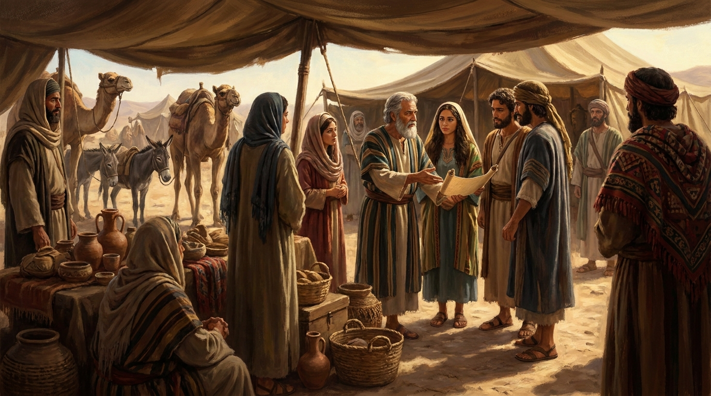
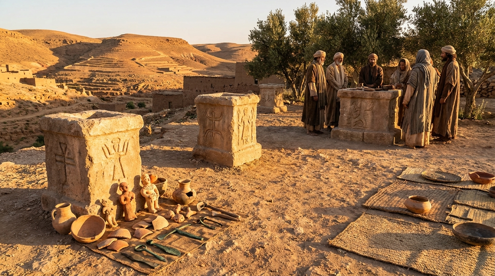
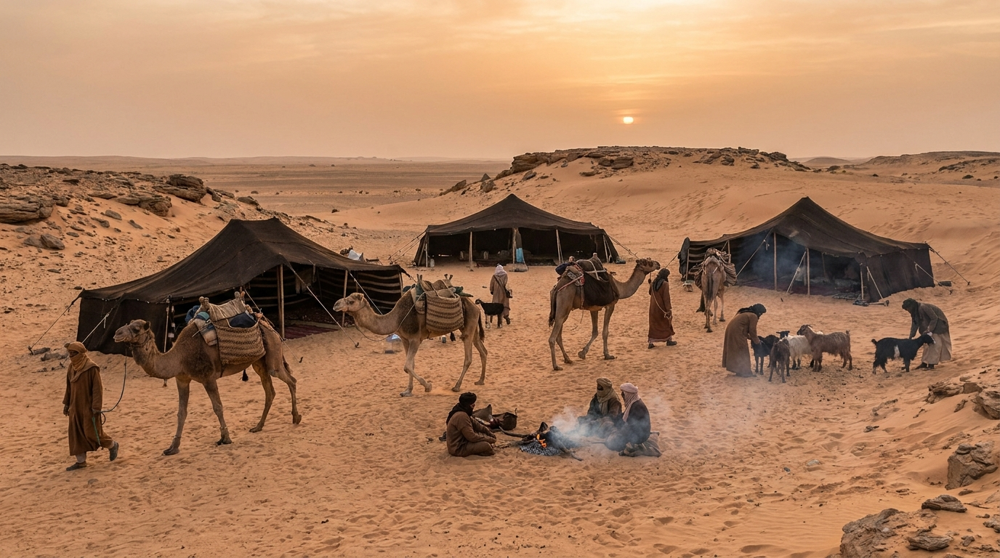

As Nações Vizinhas
A história de Israel não aconteceu de forma isolada. O povo de Deus viveu cercado por diversas nações e tribos que influenciaram sua cultura, religião, economia e política. Conhecer esses povos é essencial para entender os conflitos, as alianças e as advertências dos profetas.
🗿 Os Canaaneus

Eram os habitantes originais da Terra Prometida antes da conquista de Josué. Eles não eram um único povo, mas várias tribos independentes. Sua religião era fortemente politeísta, com destaque para a adoração a Baal e Aserá, o que se tornou a maior pedra de tropeço e tentação constante para os israelitas ao longo do Antigo Testamento.
⚔️ Os Filisteus

Conhecidos como os "Povos do Mar", habitavam a costa do Mar Mediterrâneo (onde hoje é a Faixa de Gaza). Eles possuíam tecnologia avançada em metalurgia, o que lhes dava vantagem militar com armas de ferro. Foram os arqui-inimigos de Israel durante a época dos Juízes e os primeiros reis (como nas histórias de Sansão, e o gigante Golias contra Davi).
⛺ Edomitas, Moabitas e Amonitas

Esses povos eram "parentes distantes" dos israelitas. Os edomitas eram descendentes de Esaú (irmão de Jacó). Os moabitas e amonitas descendiam de Ló (sobrinho de Abraão). A relação de Israel com eles oscilava entre guerras amargas e histórias de profunda lealdade, como é o caso de Rute, uma moabita que entrou para a linhagem do Messias.
🤝 Os Samaritanos
Surgiram após o exílio do Reino do Norte. Eram um povo mestiço, fruto da mistura dos israelitas que ficaram na terra com os povos estrangeiros trazidos pelo Império Assírio. Eles tinham seu próprio templo e versão da Torá. No tempo de Jesus, judeus e samaritanos se odiavam profundamente, o que torna parábolas como a do "Bom Samaritano" tão revolucionárias.
🌍 Os Gentios no Novo Testamento
"Gentio" era o termo judaico para qualquer pessoa que não fosse judia (gregos, romanos, etíopes, etc.). No Novo Testamento, vemos a quebra de uma enorme barreira cultural e religiosa, quando o Evangelho deixa de ser restrito a um grupo étnico e alcança todas as nações da Terra, mudando a história da humanidade.
✅ Resumo
Descobrir as nações vizinhas ilumina os desafios do povo de Deus. Entender os costumes desses povos nos mostra exatamente contra o que os profetas lutavam, o porquê de certas leis existirem e quão grandiosa é a graça de Deus, que no fim, planejou abraçar todos os povos da terra.